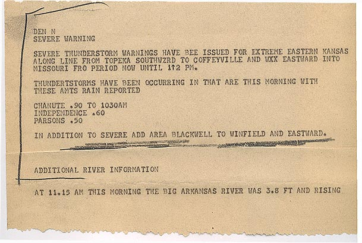
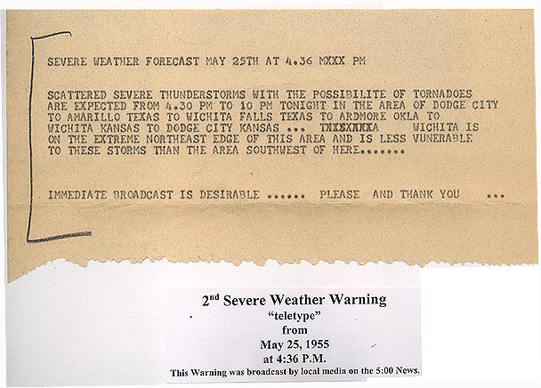
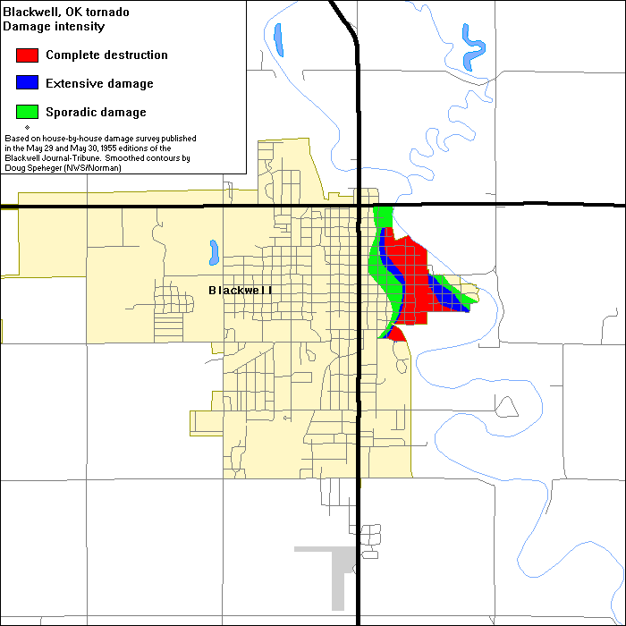
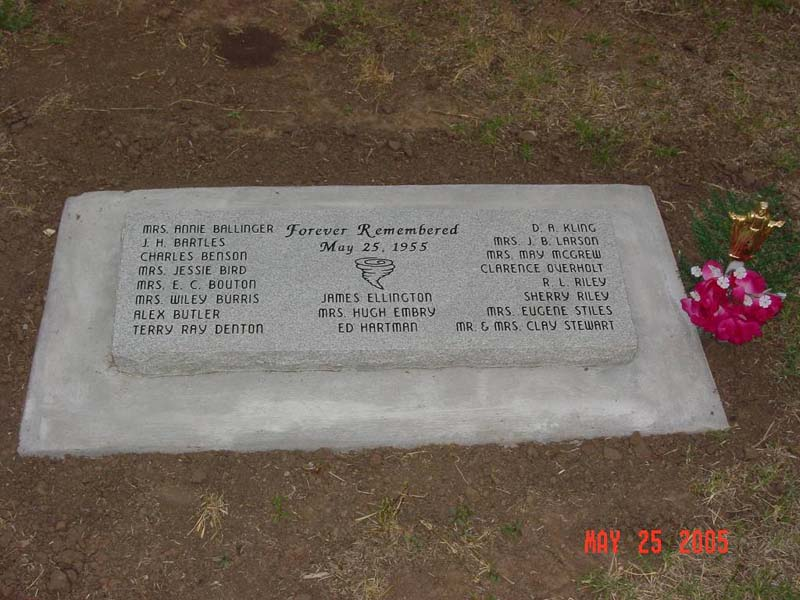

Blackwell, after dark.
The surviving record deserves a careful reading before it becomes an animation.
An F5 tornado crossed eastern Blackwell on the night of May 25. NWS Norman separates its 20 deaths from the 80 attributed to the later Udall tornado. One parent storm does not make them one tornado. NWS outbreak account
Historical opening reviewed September 21, 2026. Damage-map and memorial-image additions inspected October 3, 2026 UTC. Archival forecast documents inspected October 4, 2026 UTC. This chapter compares accessible official accounts. It has no registered camera, geographic replay, reconstructed funnel, or verified individual fatality locations.
Forecasts before the night.
The weather was already dangerous that morning. NWS Norman describes damaging winds in Kay County, followed by new storms that afternoon. Two documents in NWS Wichita's archive show the regional severe-weather information being communicated. A forecast, a request to broadcast it and evidence that a particular person received it are different records. Norman, summary · Wichita archival documents
A bulletin that names Blackwell.
The first document discusses severe thunderstorms and extends an area to Blackwell, Winfield and places eastward. That line establishes its relevance to this city. It is broader than a warning that a specific tornado was approaching Blackwell.



Reading the first bulletin
Its opening paragraph discusses severe-thunderstorm warnings for eastern Kansas and part of Missouri, with a period ending at noon. A later line adds Blackwell to Winfield and areas eastward. The noon ending is not established as the validity of that added area.
The document also reports morning storms, rain amounts and an Arkansas River observation at 11.15 AM. The crop has no identified issue date or time-zone label. The surrounding archive supplies the May 25, 1955 event context. It does not establish a precise morning issue time or who received the bulletin in Blackwell. This is a reading summary, not a complete verbatim transcript.
A broad forecast and a request to broadcast.
The second document forecasts scattered severe thunderstorms with possible tornadoes across a large region described through Dodge City, Amarillo, Wichita Falls, Ardmore and Wichita. It requests immediate broadcast. Its area description is not used to draw a warning polygon or to establish Blackwell receipt.



Reading the second bulletin
The typewritten heading has May 25 and an overtyped 4.36 PM issue label. The forecast period is 4.30 PM to 10 PM. Its body places Wichita at the region's extreme northeast edge and says the area southwest is more vulnerable.
The later archive caption supplies the year 1955, gives 4:36 P.M. and reports a broadcast by local media on the 5:00 news. That is a caption assertion, not an independently checked station record. Neither layer identifies a time zone, a Blackwell broadcaster or a resident who received it. This is a reading summary, not a complete verbatim transcript.
These documents show regional forecast language and broadcast intent. They do not establish that everyone was warned, that nobody was warned, or how much lead time a Blackwell resident had. Their clocks are kept as printed and do not reconcile the existing Blackwell time-label disagreement. The unaltered images are reproduced with attribution under the NWS default use policy, subject to its third-party exceptions. No separate third-party credit or restriction was observed for these items. No government endorsement is implied.
The path and the people affected.
The Norman table lists a 28-mile path, 500-yard width and 280 injuries. Its narrative places 19 deaths in Blackwell and one northeast of town. The historical report reproduced by NWS Wichita gives 20 deaths and 250 injuries. These are attributed counts; the injury difference has not been reconciled here. Norman, summary and tornado table · Wichita, opening paragraph
The Norman account treats the separately listed Tonkawa track as probably part of Blackwell's track. That qualification matters. This chapter does not merge catalogue rows or add their totals.
From individual buildings to a smoothed map.
NWS Norman describes a newspaper survey of approximately 85 damaged but occupied buildings, 70 with extensive but repairable damage and 190 completely destroyed. Doug Speheger used that building record to draw smoothed contours. The map groups damage into three broad classes. It does not preserve every building entry or measure wind at each colored point. Inspect the map record and its limits.


The original newspaper editions remain to be inspected. No building coordinates or wind estimates are inferred from this image.
A reviewed listing, with unresolved differences.
NWS Norman links its historical tornado listing to Doug Speheger's report, published in 2001. The review began in summer 1997. It compares coded records with climatological publications, Storm Data and local records. For the web listing, coordinate tracks became descriptions relative to towns. Changes required clear errors or sufficient evidence. Some disagreements remained unresolved. SR-209, printed pages 1 to 2
The report also distinguishes a storm's path from individual tornadoes in a family. Its methods do not settle Blackwell's clock labels, injury counts or differing path lengths. This chapter retains those questions and does not merge records or draw a new track from the report. Printed pages 4 to 7
Rescue continued through the rain.
The Norman account describes damage across about 80 city blocks. The Hazel Atlas Glass plant and Acme Foundry were destroyed, and Riverside Osteopathic Hospital was badly damaged. Medical staff continued working with candles and flashlights. Heavy rain complicated rescue work, followed by flooding in low-lying areas the next day. NWS Norman, summary
Those details belong beside the path and rating: the disaster continued after the funnel had passed. Original building records and survivor accounts are the next sources needed for a fuller account of recovery.
Three labels that need reconciliation.
These source values are preserved as written. They are not three synchronized observations.
- 9:27 p.m. CDT
Norman narrative
The outbreak summary's stated time for Blackwell. Summary
- 2126 · CST column
Norman table
The Blackwell row sits beneath a CST heading. The table does not resolve its relationship to the narrative's daylight-time label. Oklahoma tornado table, row 9
- About 2127 CST
Reproduced historical report
The Blackwell section uses standard time and an approximate qualifier. Blackwell section
Choosing one label would move a UTC reconstruction by about an hour relative to another. No absolute playback clock is assigned here. The same historical report warns that the Tonkawa barograph had no time checks. Its plotted time cannot silently become a precise synchronization anchor.
Eyewitness accounts and electrical measurements.
The reproduced report records a funnel approaching Blackwell from the south and lightning surrounding, rather than immediately beside, it. Its later accounts near Arkansas City describe a funnel visible against lightning farther north. Those Kansas observations must not be moved to a Blackwell viewpoint. Blackwell and Arkansas City sections
Bright-light testimony, electric-field instruments and radio measurements answer different questions. A remembered color does not establish calibrated brightness, duration or a physical mechanism. A radio pulse is not a camera frame. This chapter does not turn those records into a continuously glowing funnel or assign an observer's exact position from a neighborhood description.
What needs to be checked next?
The original Montgomery accounts, the 1956 Gunn paper and the 1957 correspondence need accessible original pages, figure inspection and precise coverage records. Publisher search text alone is insufficient for optical reconstruction. The dated research dossier records those access limits and disagreements.
Remembering those who died.
Fifty years after the tornado, Blackwell dedicated a memorial on May 25, 2005. NWS Norman records survivors, relief workers and local officials attending the ceremony. A later act of remembrance belongs in the history alongside the 1955 destruction.


The event total does not establish names, addresses or the place each person died. No individual identity or fatality coordinate has been verified for this chapter. An obituary, a memorial, a damaged home and a recovery location are different records; they need an explicit connection before they can support a shared marker.
Future additions should preserve the community's names and accounts, distinguish injury from death, and make the location evidence inspectable. Readers can suggest an original source or correction. Please include the exact page, caption or passage and what it establishes.
Sources and research log.
- NWS Wichita: archival weather bulletins linked from its 1955 collection
The first and second warning links identify the two complete available document images inspected October 4, 2026 UTC. Original text and later archive caption are distinguished. Exact issuing offices, time zones and Blackwell warning receipt remain unestablished. The source and rights record preserves image identities, inspected portions and limits.
- NWS Norman: the May 25–26, 1955 outbreak and Blackwell tornado
Official retrospective. Summary, tornado tables, storm-electricity discussion and references read September 21, 2026. The tables and narrative disagree about time-zone labeling. On October 3, 2026 UTC, an agent inspected the original damage-map legend, selected survey-method paragraphs, Photo 7 and the dedication captions. The original newspaper survey remains unreviewed. References listed on a page are not automatically reviewed original sources.
- NWS Wichita: reproduced Blackwell–Udall storm report
Full report text inspected, including Tonkawa, Blackwell, the Arkansas City area and Udall. This is an HTML reproduction; its transcription has not been checked against a complete original scan. The report's injury count differs from Norman's later table.
- Doug Speheger: Corrections to the Historic Tornado Database, NOAA NWS SR-209
Original scan inspected for database background, methods and review limits. Exact method locators are printed pages 1 to 2, 4 to 5 and 6 to 7, corresponding to PDF pages 3 to 4, 6 to 7 and 8 to 9. NOAA's repository labels the report Public Domain. Atlas hosts no report pages or figures. The source inspection record gives the original checksum and full inspected-page coverage.
Read the coverage and claim record · Return to the historical collection